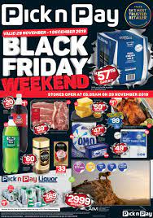

PICK N PAY
Pick n Pay is the second largest supermarket chain store in South Africa, and was established in 1967. It can also be found in other regions of southern Africa, including as Botswana, Zambia, Zimbabwe, Lesotho, Namibia, Swaziland, and had plans to open in Malawi but has yet to do so. Raymond Ackerman purchased three Pick n Pay supermarkets from Jack Goldin in Cape Town, and served as executive chairman until his retirement in 2010. His eldest son, Gareth, is the current chairman.
The Pick n Pay brand, which had previously remained largely unchanged since the 1970s, was redesigned in 2007. On 12 November 2007, the company announced a brand transformation in the form of a brand redesign, new uniforms, advertising campaigns, and the slogan "Inspired by You". This rebranding of the iconic Pick n Pay brand led to the disappearance of the apostrophe which appeared before the "n", which led to uproar among those working for the preservation of the apostrophe.
- 8h00am to 19h00pm-MONDAYS
- 8h00am to 19h00pm-TUESDAYS
- 8h00am to 19h00pm-WEDNESDAYS
- 8h00am to 19h00pm-THURSDAYS
- 8h00am to 19h00pm-FRIDAYS
- 8h00am to 19h00pm-SATURDAYS
- 8h00am to 19h00pm-SUNDAYS
WHERE WILL YOU FIND THE STORE
You Will Find Pick n Pay On The Last Passage Wich Is On The Right,In The Top Corner Next To Exact.
